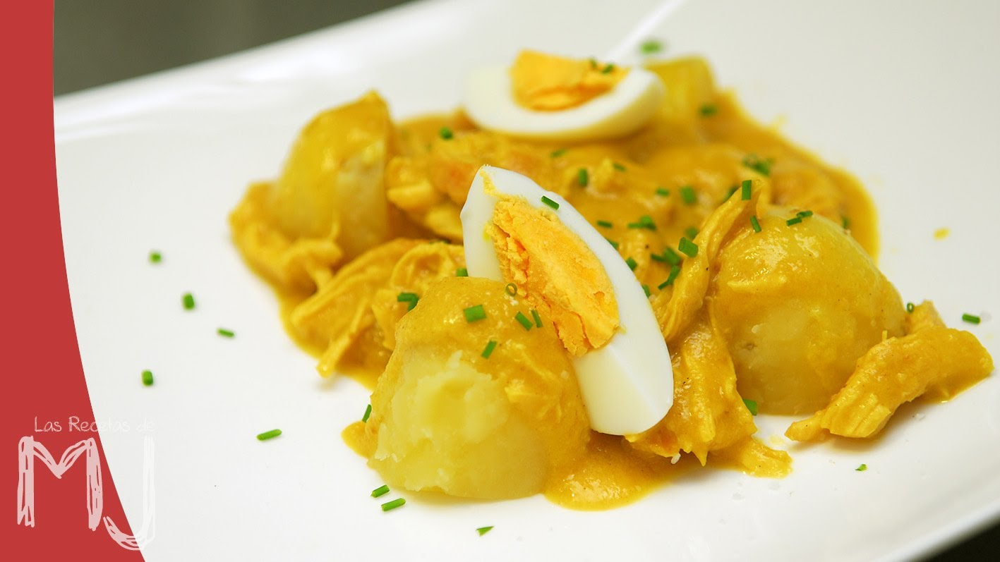
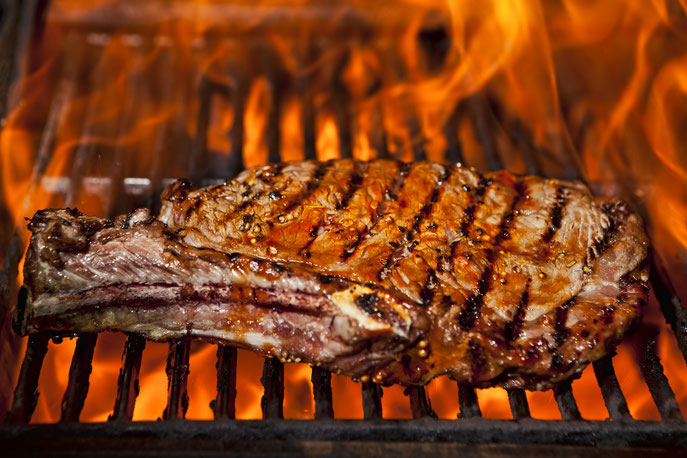

Platos tipicos
Aji de Gallina
El ají de gallina es un plato oriundo del Perú, consiste en un ají o crema espesa compuesta por gallina previamente cocida y luego desmenuzada la cual se cocina en una olla echando el caldo de gallina gradualmente para que espese. Para lograr el espesor necesario se añaden trozos de pan remojados en caldo o leche. Esta crema es servida con papas cocidas o arroz blanco. Es usual reemplazar la gallina por pollo y en algunas recetas a la crema se le agrega pecanas y queso parmesano.
Carne Asada
Carne asada is a Latin American dish of grilled and sliced beef, usually skirt, flank or flap steak.[1] It is usually cooked with a certain amount of searing to impart a charred flavor. Carne asada can be served as a main dish or as an ingredient in other dishes. The term carne asada literally translates to "grilled meat".